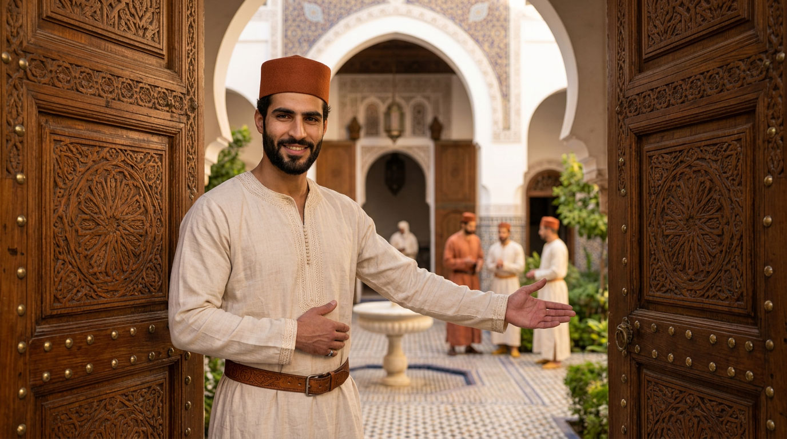
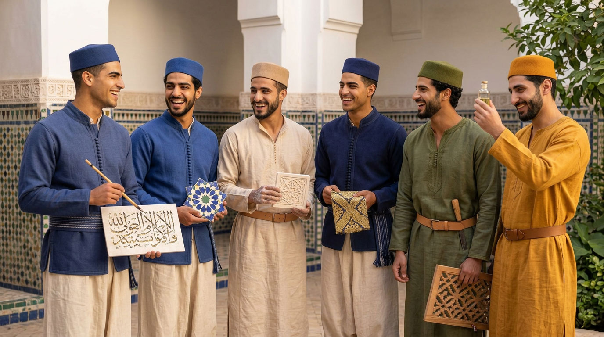
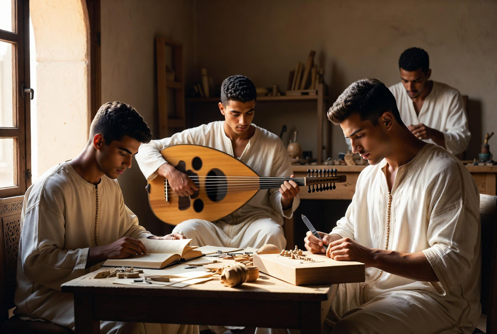
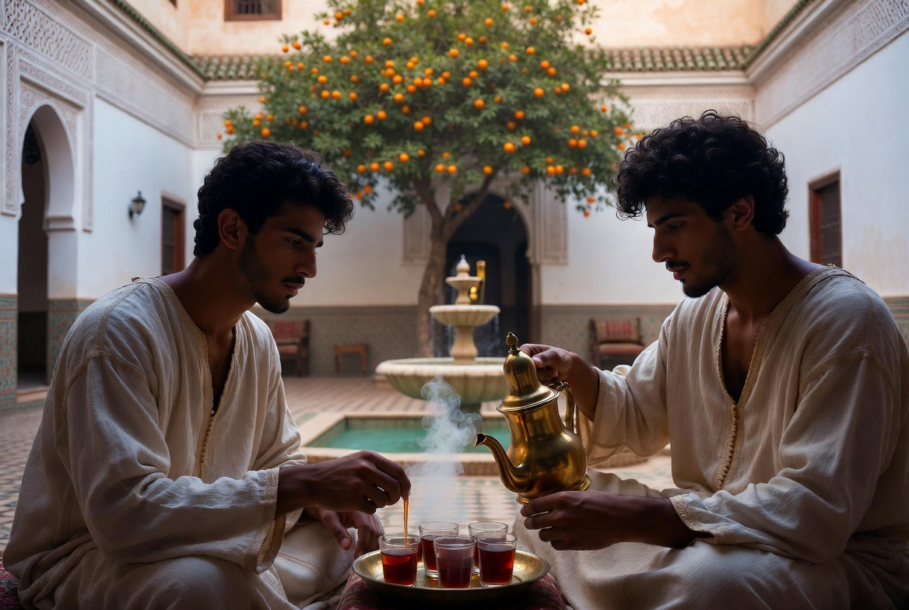
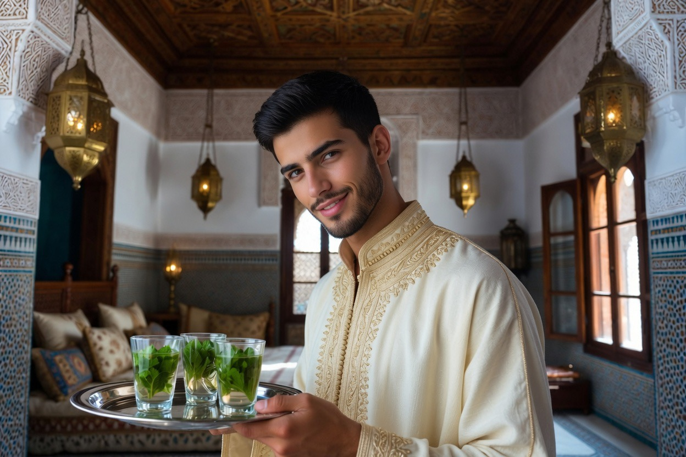
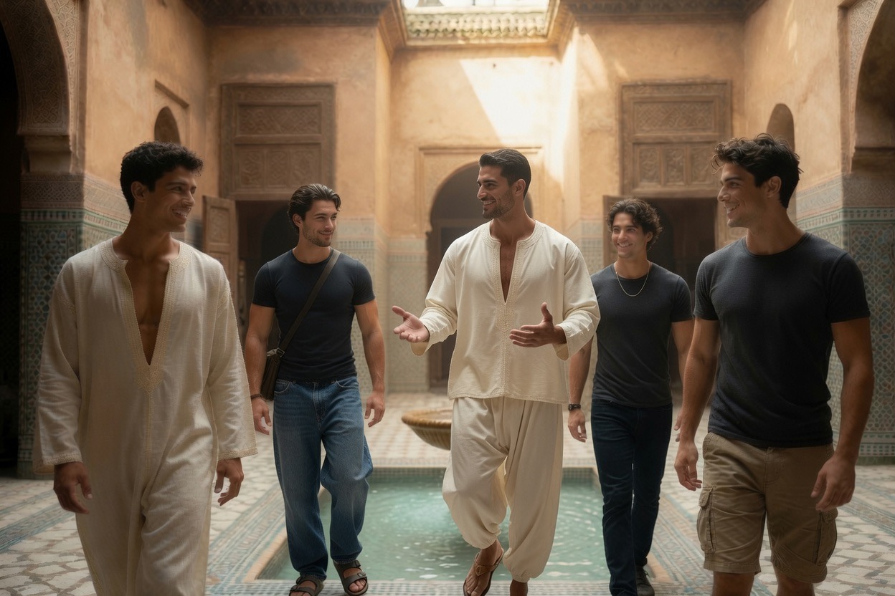
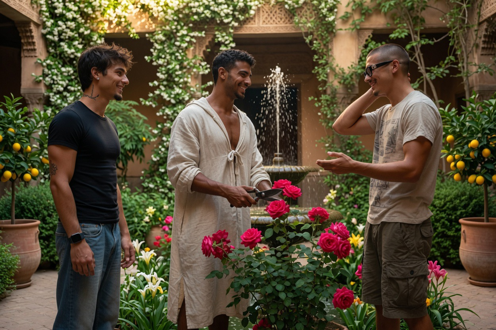
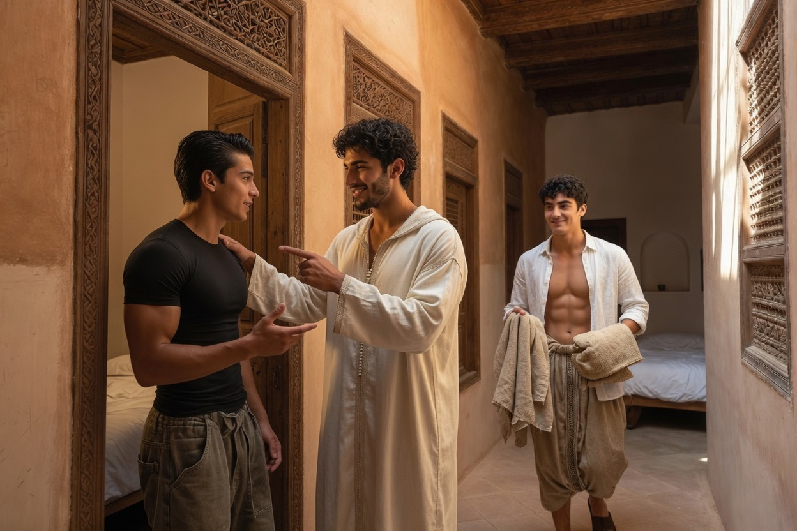

رياض الأنس
Riad Al-Uns
Demeure traditionnelle & communauté intentionnelle
au rythme de la beauté et de la tradition
Riad Al-Uns n'est pas un hôtel. C'est une communauté intentionnelle de taille humaine : jeunes hommes en formation, métiers ancestraux, prière, étude, vie partagée. Un kosmos de tradition, d'art et de beauté — où s'engager signifie accepter la discipline du jour et la présence des autres.

LE NOM
Riad Al-Uns رياض الأنس
Le nom n’est pas un ornement. C’est une déclaration.
Riad (رياض) évoque le jardin intérieur, la cour fermée sur l’extérieur et ouverte au ciel, l’espace de fraîcheur, d’eau et d’ordre qui, depuis des siècles, au Maghreb et en al-Andalus, fait de la maison une oasis de mesure et de beauté. Ce n’est pas seulement un type d’architecture : c’est une manière d’habiter le monde.
Al-Uns (الأنس) est le mot arabe qui désigne l’intimité, la familiarité cordiale, la compagnie qui chasse la solitude (wahsha). C’est le contraire de la désolation intérieure. C’est la chaleur humaine et spirituelle qui naît quand on est ensemble avec ordre, respect et présence. Ce n’est pas le bruit, ce n’est pas la confusion : c’est la quiétude pleine de celui qui sait n’être pas seul.
Ainsi Riad Al-Uns signifie, littéralement et dans le sens le plus haut :
- — le jardin de l’intimité,
- — la demeure de la vraie compagnie,
- — le lieu où l’on apprend à être avec les autres et avec soi-même sans se disperser.
Ce n’est pas un nom choisi pour sonner exotique. C’est la description de ce que la maison veut être : une communauté intentionnelle de jeunes hommes adultes célibataires qui vivent, prient, travaillent et étudient ensemble, selon le rythme ancien des cinq prières, du métier manuel, du repas partagé et du silence. Un lieu où la beauté de l’architecture, du jardin et des gestes quotidiens éduque le regard et forme le caractère, en fidélité à l’idéal de la futuwwa.
La devise le confirme avec clarté :
الرِّياضُ لِأَهْلِهِ، لَا أَهْلُهُ لِلرِّياضِ
« Le riad est pour les siens, non les siens pour le riad. »
Al-Uns n’est pas un service à consommer. C’est une présence à habiter.
ÉTAT DU PROJET
Un projet, pas encore une maison
Ce que ces pages décrivent n’existe pas encore. Riad Al-Uns est un projet — une vision précise, un lieu encore à trouver, une communauté qui n’a pas commencé. Ce que vous voyez ici est ce que nous avons en tête.
Nous cherchons des mécènes capables de porter ce projet à son terme. Certains éléments peuvent aussi être soutenus un à un — un métier à tisser, l’installation d’un atelier, la première année d’un maître artisan — chacun avec sa propre contrepartie, à la mesure de la contribution.
Un tel projet de continuité culturelle ne se construit pas seul.

L'architecture, le jardin et la vie quotidienne comme expression d'équilibre et de dignité.

Cinq prières, métier manuel, repas partagés, silence. Une journée ordonnée et incarnée.

Très peu d'hôtes, dans un cadre de luxe authentique et discret.

Le jardin, l'eau, la fraîcheur naturelle — l'espace comme expression d'équilibre.
FORMATION
Dar al-Hiraf

Maison des métiers et résidence pour hommes majeurs célibataires. Calligraphie, zellige, malḥūn, tir à l'arc — la formation du geste, du caractère et de la foi, qui prépare aussi, demain, à fonder un foyer digne et une famille.
ENTRER DANS LA MAISON
Trois manières d'approcher
Trois chemins, selon ce que l'on cherche.

Séjourner
Un temps limité, dans le rythme de la maison — sans engagement.
Découvrir →
Stages de formation
Quelques semaines pour toucher un métier — avant de s'engager plus loin.
Découvrir →
La résidence
L'engagement long : le métier, le corps, la foi, la vie commune.
Découvrir →